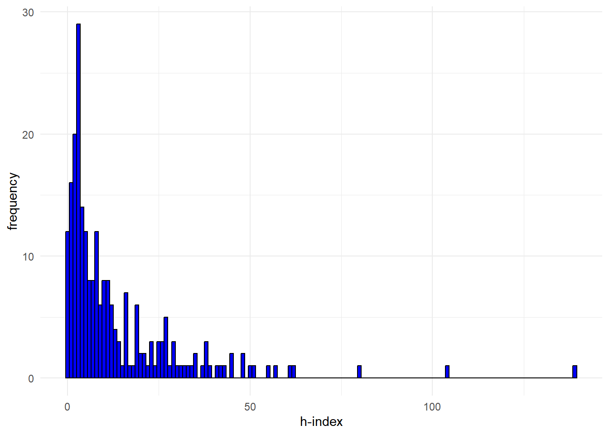
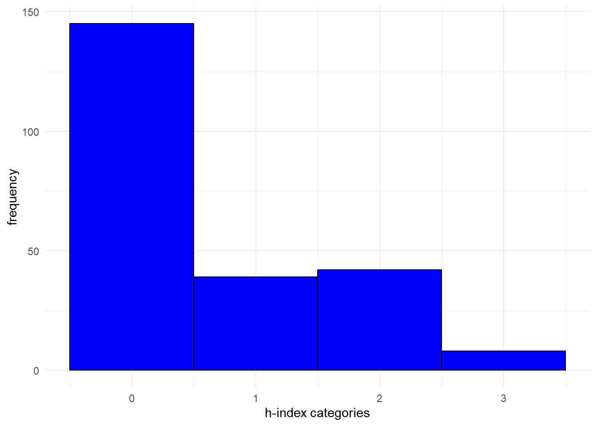
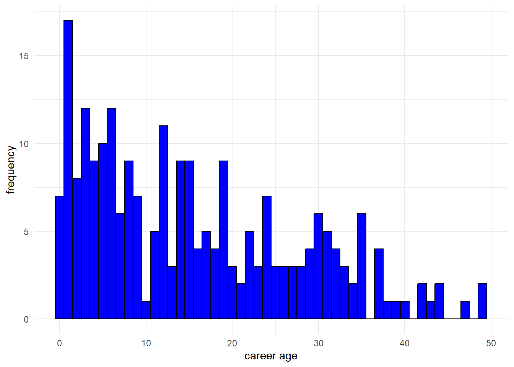
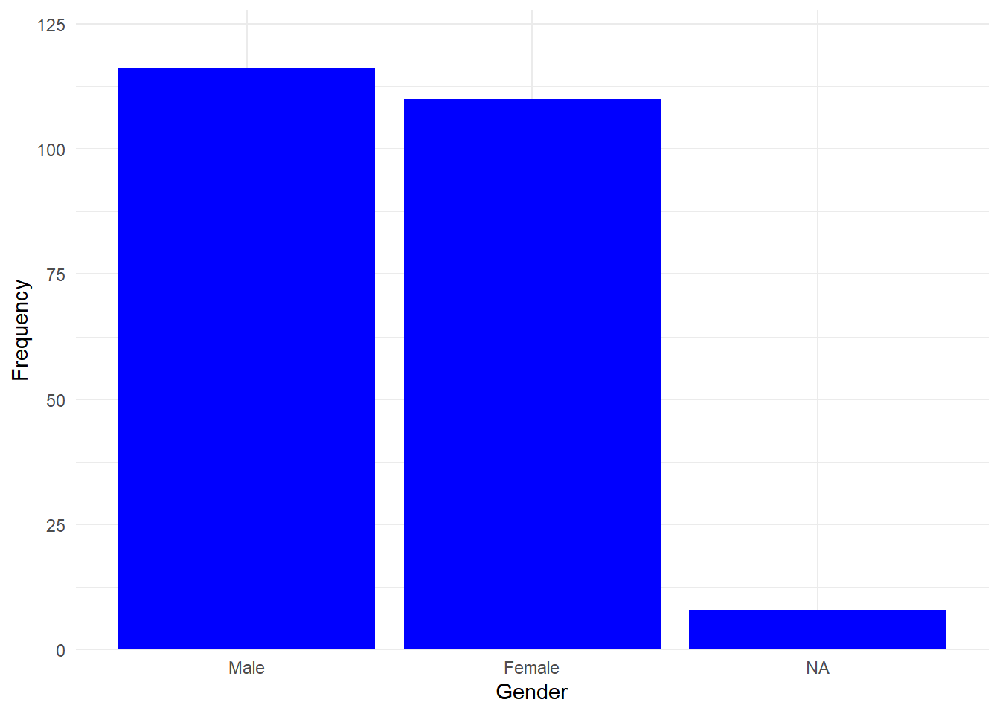

Originally, the data consisted of all scholars employed at the sociology and political science departments of all universities in the Netherlands. The data on author publications have been webscraped from OpenAlex, a database cataloging scholar information. This contained both data on the ego characteristics as well as data on the publications of each individual scholar. To answer the research questions, in this paper data from four different sociology departments at four different universities (Radboud University, Utrecht University, University of Amsterdam, and Groningen University) in 2024 has been used (N = 234). Additionally, ego-level data has been added to this data. A detailed description on the collection of these variables is presented below. The publication data has been used to create two separate waves of publication networks, wave 1 ranging from 2015 to 2019, and wave 2 ranging from 2020 to 2024. The collaboration networks were created by co-authorship ties, meaning that authors who have published together have a tie between each other. These ties are directed, the first author of a publication sends a tie to the co-authors. The underlying assumption is that the first author instigated the collaboration. In the context of cumulative advantage, this means that a scholar with a lot of indegrees (receiving ties), a lot of other authors want to collaborate with that scholar. A scholars’ amount of indegrees will be one of the ways in which the prestige of a scholar is measured and is subsequently used to establish whether the networks exhibit scale-free characteristics.
Another way in which the prestige of scholars is measured is through the h-index, which is an often used measure of prestige (Bornmann et al. 2020). This bibliometric is defined as the maximum value of h such that the scholar has published at least h works that have been cited h amount of times. The data for the H-index is also webscraped from OpenAlex using the OpenAlex API. As it is expected that a change in h-index of just 1 would be insignificant when establishing someone’s prestige, the h-index has been recoded into four categories; 0 to 10, 11 to 20, 21 to 50, and 51 and above. This way we especially distinguish the authors who can be considered with the highest prestige (h > 50) which are naturally only a small number of scholars. Furthermore, due to anomalies in the OpenAlex database, some h-indices of authors do not correspond with the authors’ real h-indices. This is a result of multiple possible errors in the OpenAlex database, such as scholars who share a name can be lumped together under one OpenAlex ID. These anomalies should be taken into account when interpreting the results.
The author’s career age will be used as a control variable and has been calculated by determining the first year author’s have published. Again, due to anomalies in the OpenAlex database some very unlikely outliers presented themselves in the data. To counter this, the first publication of an author was omitted in the calculation of career age and subsequently a mean score of all publication years was calculated. The first publication year was than determined by looking at the minimum year within the range of the ‘mean score - 25 years’. This way the first publication years are not necessary correctly estimated, however these differences are small enough that they will likely not impact the results. Ultimately, the career age has been calculated by subtracting the first publication year from 2024. This way the higher the career age, the longer a scholar is publishing.
The gender of the scholars was not available through OpenAlex. Therefore, the first name of the scholars has been used as an indication of gender. For this, the ‘Meertens Voornamenbank’ has been used which allowed a percentage to be calculated to what extent a name is used for women. For instance, if 75% of people who are named a certain way are women and 25% are men, a score of 0,75 would be assigned to this scholar. It was later determined that a score of 0,5 or higher are categorized as female and below 0,5 is categorized as male. There were 8 missing values on this variable, however RSiena is able to handle some missing data on covariates (Ripley et al. 2011).
First, to answer the research questions regarding the scale-free
networks I look at the degree distributions and subsequently, using the
poweRlaw package, the scale parameters are calculated to
establish whether or not the degree distribution follows a power law.
Furthermore, the networks are visualised in graphs to determine whether
hubs can be observed as well as whether these hubs are concentrated
around those with the highest h-index. Moreover, I calculated different
centrality measures and investigated whether or not they were correlated
with the scholar’s h-index., in order to determine whether hubs are the
network are concentrated surrounding those with the highest h-index.
Second, to answer the explanatory research questions, I used the
RSiena package. This package provides a Stochastic Actor
Oriented Model (SAOM) in the form of SIENA (Simulation Investigation for
Empirical Network Analysis) (Ripley et al.
2011). This SAOM is able to assess the evolution of the network
between wave 1 and wave 2. Actors in the simulation are able to ‘take a
ministep’. This means that each time a random actor is allowed to either
make, break or remain (no change) a tie. Based on many subsequent
simulations, estimates can be determined as to what kind of effects are
best able to predict the evolution of the network. In order to do so,
different parameters, either structural or at the ego-level, are added
to the model to obtain these estimates. The exact parameters used for
each model are described in the results section (here).
Ultimately, five models (including a null-model) were estimated. The null-model consists of no structural effect and solely presents the reciprocity and density. In the first model all structural network effects are added. The second model consists of the structural network effects as well as the ego-level effect of h-index. In model 3, the ego-level control variables career age and gender are added. Last, model 4 presents the same as model 3. However, the structural effect of indegree popularity has been added instead of a quadratic effect of indegree popularity.
As the data used in this study has been obtained through webscraping publicly available data, some ethical issues have to be considered. First and foremost, due to the nature of webscraping data, the scholars in this data set have not given their informed consent for using this data. Some measures were taken to deal with this issue the best way possible. First, I have tried to make the data presented in this lab journal as anonymous as possible. Second, only information that was necessary for the purpose of this research were scraped, therefore minimizing infringement on privacy. Third, related to this, the data scraped for this research is not potentially harmful in nature, minimizing the thread of potential negative consequences.
Nevertheless, despite these precautions, the issue of the use of non-consensual data remains. I personally do not subscribe to the idea that just because people consented to share data in one context, they automatically grant permission for it to be freely used for research purposes. Although using already existing publicly available information on scholars from the internet, the study provides new information about, for instance, the tie formation between scholars. While one could argue that consent is implicitly given for the existing data, the scholars have definitively not consented to presenting this new information. This study did not provide any names and consciously tried to leave out any information that could possibly lead to the recognition of specific scholars within, for instance, the network graphs. Still, informed consent to use personal data for research purposes was not acquired, meaning that, in the best case scenario, this form of data collection can be considered ethically questionable.
summary(df_ego$h_index)#> Min. 1st Qu. Median Mean 3rd Qu. Max.
#> 0.00 3.00 7.00 13.31 17.75 139.00ggplot(df_ego, aes(x = h_index)) + geom_histogram(binwidth = 1, fill = "blue", color = "black") + labs(x = "h-index",
y = "frequency") + scale_x_continuous() + scale_y_continuous() + theme_minimal()
summary(df_ego$h_index_cat)#> Min. 1st Qu. Median Mean 3rd Qu. Max.
#> 0.0000 0.0000 0.0000 0.6282 1.0000 3.0000ggplot(df_ego, aes(x = h_index_cat)) + geom_histogram(binwidth = 1, fill = "blue", color = "black") +
labs(x = "h-index categories", y = "frequency") + scale_x_continuous() + scale_y_continuous() + theme_minimal()
summary(df_ego$career_age)#> Min. 1st Qu. Median Mean 3rd Qu. Max.
#> 0.00 5.00 13.50 15.56 24.00 49.00ggplot(df_ego, aes(x = career_age)) + geom_histogram(binwidth = 1, fill = "blue", color = "black") +
labs(x = "career age", y = "frequency") + scale_x_continuous() + scale_y_continuous() + theme_minimal()
summary(df_ego$female)#> Min. 1st Qu. Median Mean 3rd Qu. Max. NA's
#> 0.0000 0.0000 0.0000 0.4867 1.0000 1.0000 8ggplot(df_ego, aes(x = factor(female))) +
geom_bar(fill = "blue") +
labs(x = "Gender", y = "Frequency") +
scale_x_discrete(labels = c("0" = "Male", "1" = "Female")) + # Custom labels for x-axis
scale_y_continuous(expand = expansion(mult = c(0, 0.1))) + # Add space above bars
theme_minimal() 